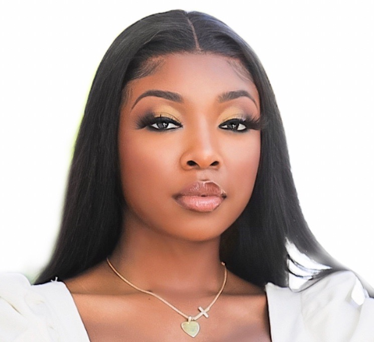

Meet Ramyia Johnson
Ramyia Johnson is a creative and driven individual from Belle Glade, Florida, or what is also known as "Muck City." Ramyia has a passion for exploring new ideas and opportunities. As the salutatorian of her high school graduating class, Ramyia has always excelled academically, driven by a commitment to learning and personal growth. She holds an Associate in Arts degree in Health Sciences and is currently a Junior majoring in Information Technology. Her studies reflect her fascination with the intersection of technology and creativity, particularly in graphic design, a field she is eager to master. She embraces challenges that require innovative thinking and a diverse set of skills, embodying the qualities of a true “Jack of All Trades.” With four years of experience as a makeup artist and two years as an esthetician, Ramyia has developed a eye for beauty and a talent for helping others feel confident and empowered. Her work in the beauty industry has sparked a unique interest in merging technology with artistry, whether through digital content creation or branding. She remains dedicated to finding innovative ways to combine her talents and create meaningful, impactful experiences. Alongside her professional endeavors, Ramyia is a young mother to a 10-month-old child. This new role has deepened her understanding of resilience and adaptability, pushing her to continue growing both personally and professionally. Ramyia aims to inspire others, including her child, to live life without limits and to find beauty in every experience. As she moves forward, she is excited to carve out a unique path that blends technology, creativity, and entrepreneurship..
Skills

Makeup Artistry

EKG Technician
Customer Service
Hobbies
Graphic Design

Travel

Content Creation
Testimonials
"My journey has been one of resilience, determination, and the courage to redefine my path. After graduating as salutatorian of my high school class, I began my college journey at FAMU in 2021. However, after two semesters, I made the bold decision to take a step back and focus on entrepreneurship, dedicating time to personal growth and pursuing my passion for the beauty industry. In November 2023, the birth of my first child became a turning point, sparking a renewed sense of purpose and motivating me to return to school. I earned my Associate in Arts degree in Health Sciences in Summer 2024 and re-enrolled at FAMU to pursue a bachelor’s degree in Information Technology. Now a junior, I’m channeling my creativity and drive into mastering graphic design and exploring the intersection of technology and artistry. Balancing my roles as a student, entrepreneur, and mother has been both challenging and deeply rewarding. My journey has taught me that it’s never too late to pursue your dreams and that life’s challenges can inspire the drive to achieve greatness. I am committed to creating a future filled with purpose and possibility, not only for myself but for my child as well."